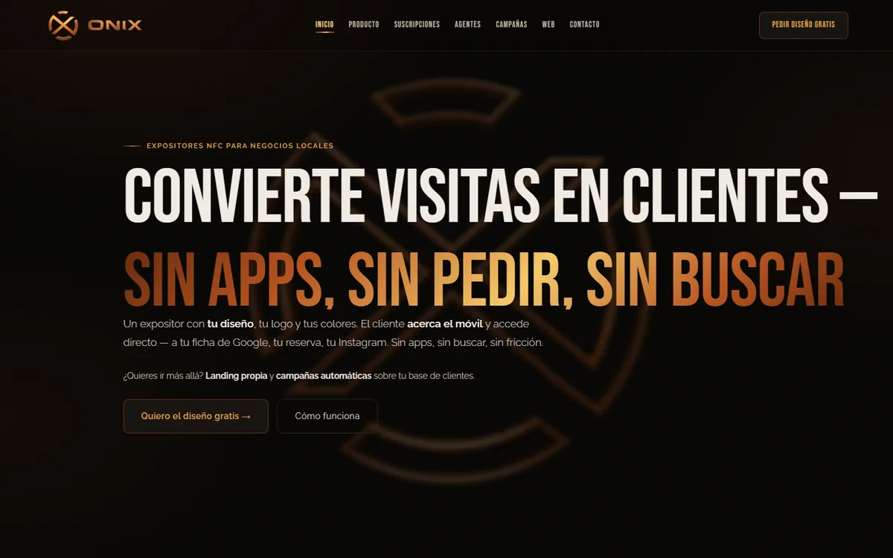
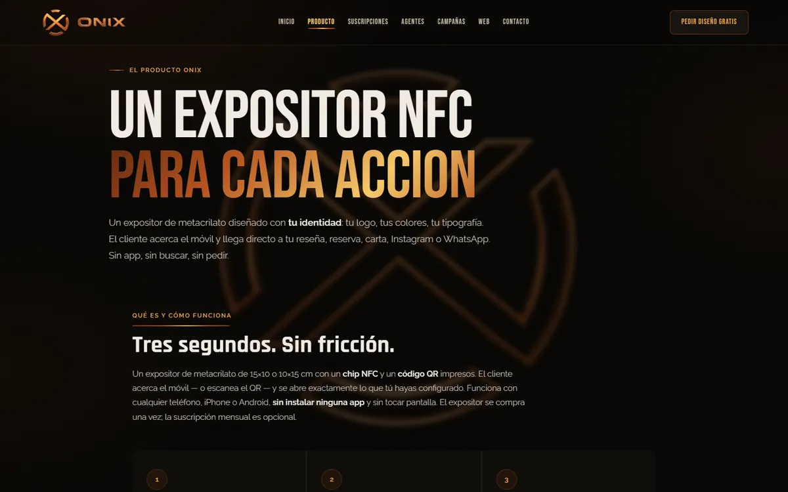

Para quién
- Bares, restaurantes, peluquerías, centros de estética, tiendas, alojamientos rurales, estudios de tatuaje y papelerías de Girona
- Negocios con mostrador que viven de las reseñas, las reservas y de que el cliente repita
Expositores de metacrilato personalizados con NFC y QR para negocios locales de Girona: el cliente acerca el móvil y llega directo a la reseña de Google, la reserva o el contacto. Diseñé la marca, la web, los precios y los expositores.
Pedir una reseña o una reserva en el mostrador casi nunca funciona: el cliente tiene que buscar el negocio, abrir la aplicación y encontrar el botón. Cada paso pierde gente.
Y un negocio pequeño no tiene tiempo de pedírselo a cada cliente ni de mantener varias herramientas a la vez. Necesita algo que funcione solo desde el mostrador, sin explicaciones.
La idea: que todo eso sea un solo gesto, acercar el móvil al expositor. Y que el soporte lleve la marca del negocio, no la de una plataforma.
Cada expositor se diseña con el logo, los colores y la tipografía del negocio, con un sistema de diseño propio en tres estilos y hasta tres revisiones.
Funciona como un pago contactless, con cualquier iPhone o Android y sin instalar nada. Si el móvil no tiene NFC, puede escanear el QR impreso.
Reseña de Google, reservas, carta digital, Instagram, WhatsApp o su web. El destino se cambia sin reimprimir el expositor.
Se deja colocado y funcionando en el negocio, con garantía de 12 meses.
El soporte no cambia, la acción sí: este mes reseñas, el siguiente reservas o mensajes. Con la suscripción opcional, el cambio de destino se hace cada mes.


Portada, página de producto con ejemplos para cada sector, planes, presupuesto de web a medida y un formulario para empezar en varios pasos.
Vistas previas públicas de lo que ve el cliente al acercar el móvil.
Tres estilos (minimalista, urbano y cálido), reglas de tipografía, color y composición, y una lista de 15 puntos que se revisa antes de enviar cada diseño.
Metacrilato de 15×10 o 10×15 cm con chip NFC y código QR impresos, en horizontal o vertical según el mostrador.
Web a medida, agentes de IA para WhatsApp, reseñas e Instagram que nunca responden sin revisión humana, y campañas para negocios locales.
El expositor se compra una vez. La suscripción mensual es opcional y sin permanencia.
Todo el proyecto, de principio a fin:
Web publicada con demos NFC y el sistema de diseño terminado.
El piloto con los primeros negocios de Girona y enseñar aquí casos reales instalados.